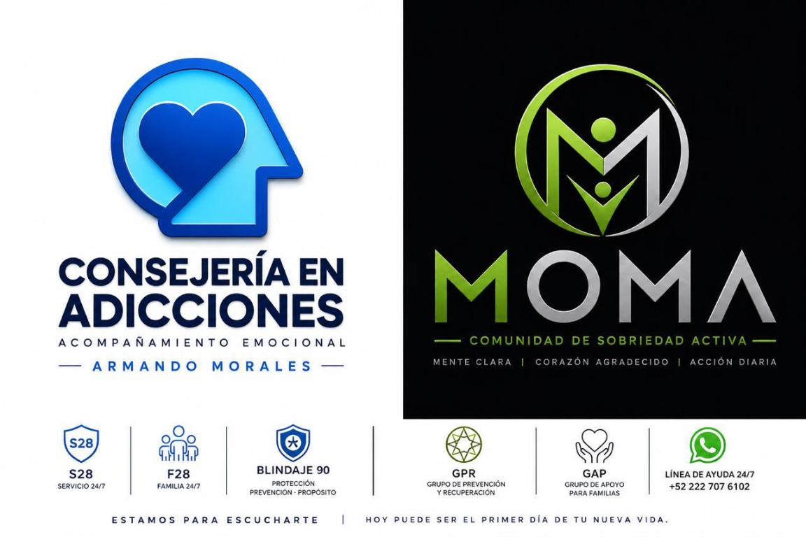

Servicio 24/7
Consejería y acompañamiento emocional para dar el siguiente paso.
Orientación confidencial · Paso a paso
Consejería y acompañamiento emocional para personas y familias. Encuentra apoyo, prevención y una ruta posible hacia la recuperación.

MOMA · Comunidad de sobriedad activa
Mente clara, corazón agradecido, acción diaria.
Acompañamiento
Consejería y acompañamiento emocional para dar el siguiente paso.
Apoyo y acompañamiento para las familias.
Un enfoque de prevención y propósito.
Grupo de prevención y recuperación.
Grupo de apoyo para familias.
El proceso
Redes sociales
Contacto
Da el primer paso desde donde estás. Cuéntame brevemente cómo puedo acompañarte.
Línea de ayuda 24/7 +52 222 707 6102